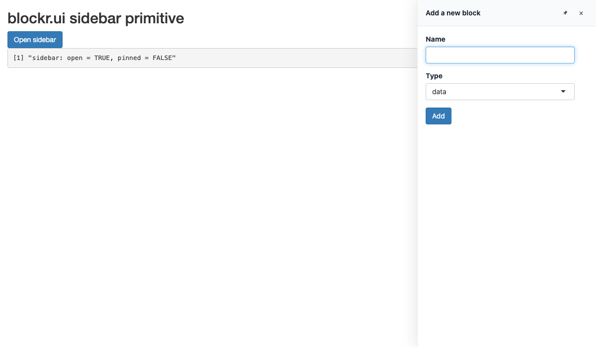
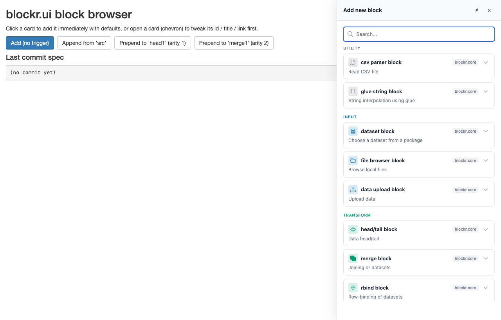
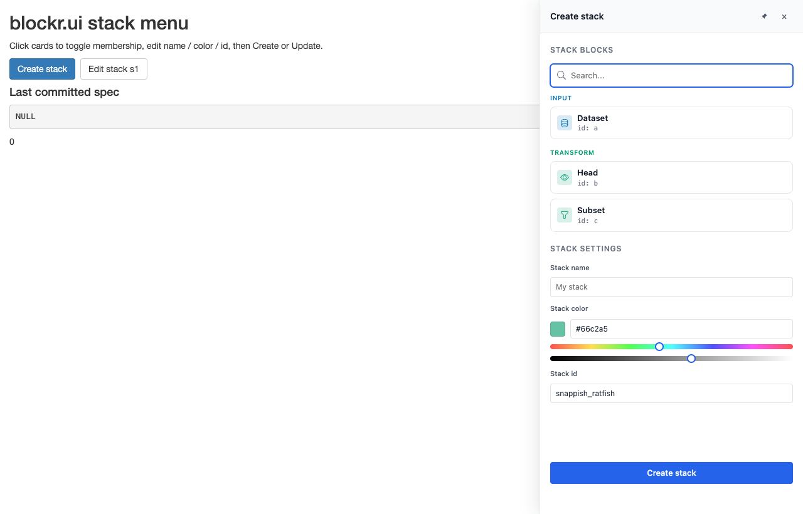
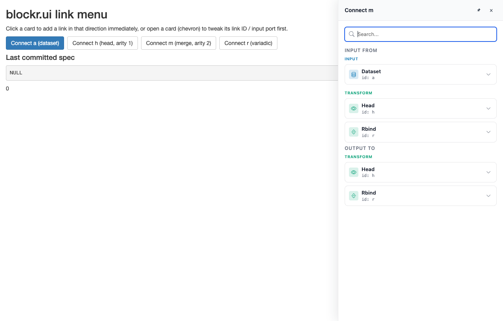

User-interface primitives shared across the blockr ecosystem. Designed to sit between blockr.core and renderers such as blockr.dock.
Installation
You can install the development version of blockr.ui from GitHub with:
# install.packages("pak")
pak::pak("BristolMyersSquibb/blockr.ui")Example
Minimal sidebar
A slide-in panel that hosts arbitrary Shiny content. See vignette("sidebar", package = "blockr.ui") for the full API.
library(shiny)
library(blockr.ui)
ui <- fluidPage(
titlePanel("blockr.ui sidebar primitive"),
actionButton("open", "Open sidebar", class = "btn-primary"),
verbatimTextOutput("state"),
sidebar_ui("main_sidebar")
)
server <- function(input, output, session) {
observeEvent(input$open, {
show_sidebar(
"main_sidebar",
title = "Add a new block",
ui = tagList(
textInput("block_name", "Name"),
selectInput(
"block_kind",
"Type",
c("data", "transform", "plot")
),
actionButton("confirm", "Add", class = "btn-primary")
)
)
})
observeEvent(input$confirm, {
hide_sidebar("main_sidebar")
})
output$state <- renderPrint({
state <- input$main_sidebar
if (is.null(state)) return("sidebar: not yet rendered")
sprintf(
"sidebar: open = %s, pinned = %s",
state$open, state$pinned
)
})
}
shinyApp(ui, server)
Block browser
A card-list block picker (one card per row of blockr.core::available_blocks()) designed to mount inside the sidebar. See vignette("block-browser", package = "blockr.ui").
library(shiny)
library(blockr.ui)
library(blockr.core)
board <- new_board(
blocks = list(
src = new_dataset_block(),
head1 = new_head_block(),
merge1 = new_merge_block()
)
)
ui <- fluidPage(
titlePanel("blockr.ui block browser"),
tags$p(
"Click a card to add it immediately with defaults, or open a card",
" (chevron) to tweak its id / title / link first."
),
div(
style = "display: flex; gap: 8px; margin-bottom: 8px;",
actionButton("open_add", "Add (no trigger)", class = "btn-primary"),
actionButton("open_append", "Append from 'src'"),
actionButton("open_prepend_h", "Prepend to 'head1' (arity 1)"),
actionButton("open_prepend_m", "Prepend to 'merge1' (arity 2)")
),
tags$h4("Last commit spec"),
verbatimTextOutput("commit"),
sidebar_ui("panel", side = "right", width = "420px")
)
server <- function(input, output, session) {
last_commit <- reactiveVal(NULL)
added <- blockr.ui::block_browser_server("browser")
open_browser <- function(title, target = NULL) {
show_sidebar(
"panel",
title = title,
ui = blockr.ui::block_browser_ui(session$ns("browser"), board, target)
)
}
observeEvent(input$open_add, open_browser("Add new block"))
observeEvent(input$open_append, open_browser("Append", append_to("src")))
observeEvent(input$open_prepend_h, open_browser("Prepend", prepend_to("head1")))
observeEvent(input$open_prepend_m, open_browser("Prepend", prepend_to("merge1")))
observeEvent(added(), last_commit(added()))
output$commit <- renderPrint(last_commit() %||% "(no commit yet)")
}
shinyApp(ui, server)
Stack menu
A multi-select card-list block picker for stacks, with an inline hue / lightness colour picker and a panel-level form for the stack name / colour / id. See vignette("stack-menu", package = "blockr.ui").
library(shiny)
library(blockr.ui)
library(blockr.core)
board <- new_board(
blocks = list(
a = new_dataset_block(),
b = new_head_block(),
c = new_subset_block(),
d = new_scatter_block(),
e = new_dataset_block()
),
stacks = list(s1 = new_stack(c("d", "e")))
)
ui <- fluidPage(
titlePanel("blockr.ui stack menu"),
div(
style = "display: flex; gap: 8px; margin-bottom: 8px;",
actionButton("open_create", "Create stack", class = "btn-primary"),
actionButton("open_edit", "Edit stack s1")
),
verbatimTextOutput("commit"),
sidebar_ui("panel", side = "right", width = "420px")
)
server <- function(input, output, session) {
last_commit <- reactiveVal(NULL)
committed <- blockr.ui::stack_menu_server("menu")
open_menu <- function(title, target = NULL) {
show_sidebar(
"panel",
title = title,
ui = blockr.ui::stack_menu_ui(session$ns("menu"), board, target)
)
}
observeEvent(input$open_create, open_menu("Create stack"))
observeEvent(input$open_edit, open_menu("Edit stack s1", target = "s1"))
observeEvent(committed(), last_commit(committed()))
output$commit <- renderPrint(last_commit())
}
shinyApp(ui, server)
Link menu
A bidirectional card-list link picker. Right-click any block to add a link in either direction - the menu shows up to two sections (INPUT FROM / OUTPUT TO) based on the anchor’s free-input capacity. Single click commits one link; the panel stays open across commits via a live pool-update push. See vignette("link-menu", package = "blockr.ui").
library(shiny)
library(blockr.ui)
library(blockr.core)
board <- new_board(
blocks = as_blocks(list(
a = new_dataset_block(),
h = new_head_block(),
m = new_merge_block()
))
)
ui <- fluidPage(
sidebar_ui("panel", side = "right", width = "420px"),
actionButton("open", "Connect a"),
verbatimTextOutput("spec")
)
server <- function(input, output, session) {
committed <- link_menu_server("menu")
observeEvent(input$open, {
show_sidebar(
"panel",
title = "Connect a",
ui = link_menu_ui(session$ns("menu"), board, anchor = "a")
)
})
output$spec <- renderPrint(committed())
}
shinyApp(ui, server)
Code of Conduct
Please note that the blockr.ui project is released with a Contributor Code of Conduct. By contributing to this project, you agree to abide by its terms.